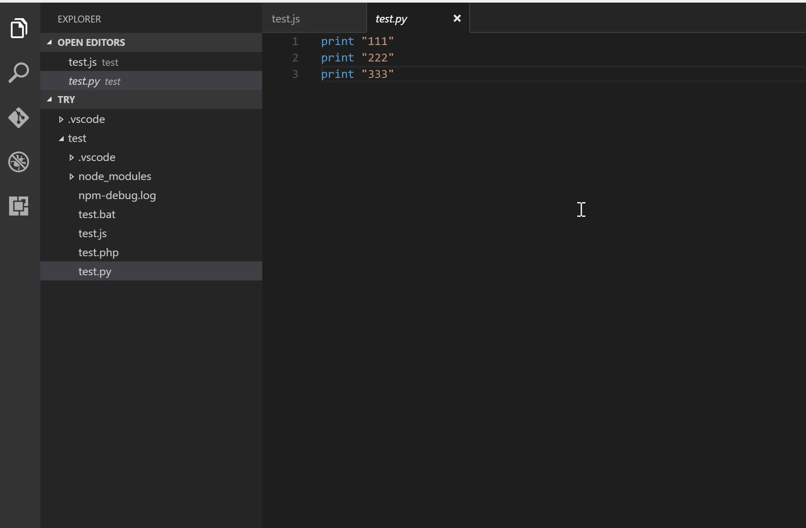

There is a widespread practice in software documentation that I find particularly frustrating: using animated GIFs to explain how something works.
They are everywhere. Programming tutorials, application manuals, feature demonstrations and installation guides. A short animation shows us how to open a menu, select an option, drag an item and obtain a result.
It seems like a good idea. In a few seconds we can see a process that would take several paragraphs to explain. But many of these animations cannot be stopped, slowed down or inspected frame by frame.
For me, as a person with low vision, this is often an insurmountable barrier. And I am not the only one.
The problem is not animation. The problem is that somebody else has decided how quickly I must understand it.
An explanation that disappears
To follow a tutorial, I need to move closer to the screen, enlarge one area, find the cursor and understand which element has changed. Meanwhile, the GIF keeps moving. By the time I have found the menu, it is already showing the final result. When it loops, I have to reconstruct the exact point where I got lost.
A continuous animation requires people to see, interpret and remember at the pace chosen by its author. This affects people with low vision, cognitive or attention disabilities, visual-processing difficulties, motion sensitivity and motor limitations. It also affects anyone who is tired, distracted or learning an unfamiliar interface.
WCAG 2.2 Success Criterion 2.2.2, “Pause, Stop, Hide”, requires a way to pause, stop or hide moving content that starts automatically and lasts longer than five seconds. That is a minimum. In a tutorial, pausing may not be enough: people often need to move backwards, move forwards and inspect each step.
This is not an exceptional case
The same companies that build digital tools use or support animated GIFs in their products and help materials. This does not mean every implementation is equally problematic, but it shows how normalised the format has become.


The animation starts paused. Stop restores the first frame.

The animation starts paused. Stop restores the first frame.
- Figma lets people add animated GIFs to prototypes and play them in presentation view.
- Slack uses animated GIFs in help pages and integrates them into messages.
- Microsoft publishes code samples for playing GIFs and controlling playback.
- Notion supports GIF as an image format within pages.
- GitHub can display GIFs, but it provides an accessibility preference to disable autoplay and its editorial style guide explicitly says not to use animated GIFs in documentation.
GitHub is particularly interesting because it demonstrates two sound decisions: giving users global control over motion and adopting an editorial rule that avoids animated GIFs in documentation. See both Managing accessibility settings and the GitHub Docs style guide.
An alternative I can control
The following demonstration recreates a process with clicks inside an interface: installing an extension and running code. It does not start on its own. It can be played and paused, but it can also be moved backwards and forwards one frame at a time. Every state is independent, marks the exact click target and retains a textual explanation.
Example: install an extension and run code
1. Click Extensions in the activity bar
What an accessible visual tutorial should provide
We do not need to eliminate all animation. We need to stop treating it as a sealed sequence that forces everyone to watch in the same way. An accessible tutorial should:
- not start automatically;
- include play, pause, previous and next controls;
- let people inspect every step without a time limit;
- provide equivalent written instructions;
- visually identify what changes in each step;
- respect the system’s
prefers-reduced-motionsetting; - use controlled video or a sequence of static images when either is clearer.
A very simple test: if a person cannot stop the demonstration, enlarge part of it and continue from the same point, the tutorial is not under their control.
Time is part of accessibility too
We often discuss accessibility in terms of contrast, font size, alternative text or keyboard navigation. But there is also temporal accessibility: having enough time to perceive, understand and act.
An animated GIF without controls takes that time away and turns it into an imposition. The solution is not complicated. Give control to the person watching.
Above all, remember something basic: a tutorial is useful only if the person who needs it can follow it.